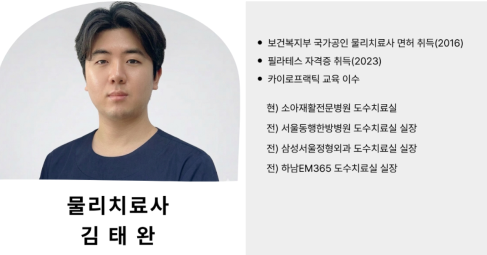
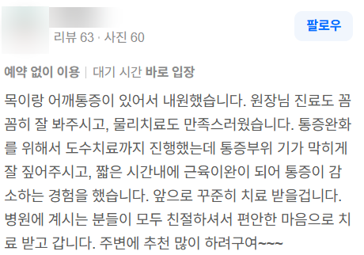
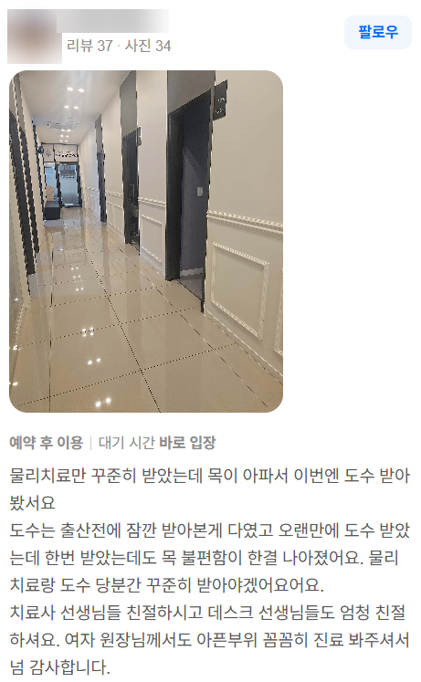
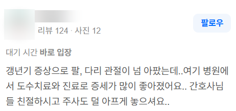

안녕하세요.
물리치료사 출신 체형교정 전문가, 리무브 체형교정 대표 원장입니다.

지난 1편 글에서는 제가 왜 수년간 일해온 안정적인 병원을 나와 구리 갈매동에 '리무브 체형교정'을 열게 되었는지, 그 솔직한 비하인드 스토리를 들려드렸습니다.
오늘은 병원 도수치료실에 근무하던 시절, "선생님 계시는 날로 4주 예약할게요"라며 저를 콕 집어 지명해 주셨던 고객분들의 실제 후기 5선과 함께, 제가 어떤 원칙으로 체형을 케어해 왔는지 말씀드리려 합니다.
1. "통증 부위를 기가 막히게 잘 짚어주십니다"

목과 어깨 통증으로 병원을 찾으셨던 회원님의 후기입니다.
도수치료나 마사지를 받아보신 분들은 아실 겁니다. 어떤 곳에 가면 아픈 부위 주변만 슬렁슬렁 문지르다 끝나 허무했던 경험이 있으실 겁니다.
저는 겉으로 드러난 통증 부위만 보지 않습니다. 목이 아프다고 목만 만지는 것은 하수입니다. 목을 앞으로 잡아끄는 가슴 앞쪽(소흉근), 날개뼈를 뒤틀리게 만드는 근육, 그리고 상부 경추의 압박을 정확히 짚어내야 합니다.
핵심 문제 지점(Trigger Point)과 유착된 신경 통로를 정밀하게 타깃팅하면, 오랜 시간 힘들이지 않고도 굳었던 근육이 빠르게 풀리며 뻣뻣했던 움직임이 편안해집니다.
2. "자세와 운동법을 구체적으로 알려주셔서 4주 고정 예약을 했습니다"

골반 틀어짐과 허리 불편감으로 찾아주셨던 회원님의 리뷰입니다. 제 교정 철학을 가장 잘 보여주는 소중한 후기입니다.
베드에 가만히 누워서 마사지만 받고 끝나는 관리는, 문을 열고 나서는 순간 제자리로 돌아갑니다.
전문가가 아무리 손으로 뼈를 맞추고 근육을 풀어놓아도, 일상으로 돌아가 다리를 꼬거나 짝다리를 짚으면 뇌는 원래의 '틀어진 자세'로 몸을 되돌려 놓습니다.
그래서 저는 손으로 급한 긴장을 풀고 나면, 남은 시간의 상당 부분을 '회원님 몸의 1:1 맞춤 사용설명서'를 가르쳐 드리는 데 씁니다.
- 왜 내 골반이 틀어졌는지
- 의자에 앉을 때 골반을 어떻게 지탱해야 하는지
- 집에서 하루 3분 꼭 해줘야 하는 맞춤 안정화 운동이 무엇인지
회원님 스스로 내 몸의 주인이 되어 바른 정렬을 유지할 수 있게 만들어 드리는 것이 저의 원칙입니다.
3. "물리치료만 받다 도수치료를 받았는데, 한 번만으로 목이 한결 편해졌어요"

출산 후 육아로 뒷목과 어깨가 완전히 굳어버렸던 회원님의 후기입니다.
목이 뻐근할 때 핫팩이나 단순 전기 물리치료만 수 주간 반복해서 받으시는 분들이 많습니다. 물론 온열 관리도 순환을 돕지만, 틀어진 뼈의 정렬과 신경 압박은 기계 관리만으로는 풀리지 않습니다.
특히 출산 후에는 관절을 잡아주는 인대가 느슨해진 상태에서 아기를 안다 보니 목과 등의 축이 무너지기 쉽습니다.
이때는 단순 온찜질이 아니라, 느슨해진 곳은 안정화하고 과긴장된 후두하근과 신경 길을 터주는 정밀한 손기술이 들어가야 단 한 번의 케어로도 고개가 가볍게 돌아가는 변화를 느끼실 수 있습니다.
4. "과잉 진료 없이 항상 편안하게 갈 수 있는 곳"

체형교정 센터나 관리실을 찾을 때 가장 두려운 것 중 하나가 바로 '무리한 장기 등록 강요'와 '공포 마케팅'일 것입니다.
"지금 당장 30회 안 끊으면 큰일 난다"는 식의 상업적인 마케팅에 지치셨던 분들이 저를 찾아오셔서 가장 안도하셨던 부분입니다.
저는 불필요한 장기 등록을 권하지 않습니다. 굳이 많은 횟수가 필요 없는 가벼운 긴장은 몇 번의 집중 케어와 맞춤 재활운동 지도만으로 스스로 일상을 되찾고 졸업할 수 있도록 돕습니다.
상업적인 부담 대신, "이곳에 오면 무조건 괜찮아질 수 있다"는 확신을 드리는 것이 제 신념입니다.
5. "갱년기 증상으로 온몸 관절이 아팠는데, 증세가 정말 많이 좋아졌어요"

50대 전후 갱년기가 찾아오면 호르몬 변화로 전신의 인대와 관절막이 건조해지고 뻣뻣해집니다. 어깨, 팔꿈치, 고관절, 무릎 할 것 없이 쑤시고 아프죠.
많은 분들이 "나이 탓이겠거니..." 하고 파스로 버티십니다.
하지만 나이가 들수록 가장 중요한 것은 관절의 '가동성(Mobility)'입니다. 굳어가는 관절낭의 유착을 관절 역학(오목-볼록 법칙)에 맞게 안전하게 열어주고 주변 근막을 정렬해 주면, 나이와 상관없이 가볍고 부드러운 움직임을 되찾을 수 있습니다.
🌿 "불편함을 Remove, 내 몸을 Re-move"

"불편함을 Remove, 내 몸을 Re-move"
오랜 시간 여러분을 괴롭혀온 틀어짐의 불편함은 깨끗하게 제거(Remove)하고,
굳어버린 신체에 본래의 바르고 자유로운 움직임을 다시(Re-move) 선물해 드리겠습니다.
오늘 회원님에게 필요한 과정을 반쪽짜리로 쪼개지 않고, 1:1로 온 정성을 다해 집중 케어해 드립니다.
내 몸의 상태가 궁금하시거나 만성적인 불편함으로 고민하고 계시다면 언제든 편하게 문을 두드려 주세요.
긴 글 읽어주셔서 진심으로 감사합니다.
[리무브 체형교정 찾아오시는 길]
📍 경기 구리시 갈매순환로 154 갈매현대테라타워 S동 L104호
💬 문의/예약: 네이버 톡톡 또는 댓글로 편하게 남겨주세요.